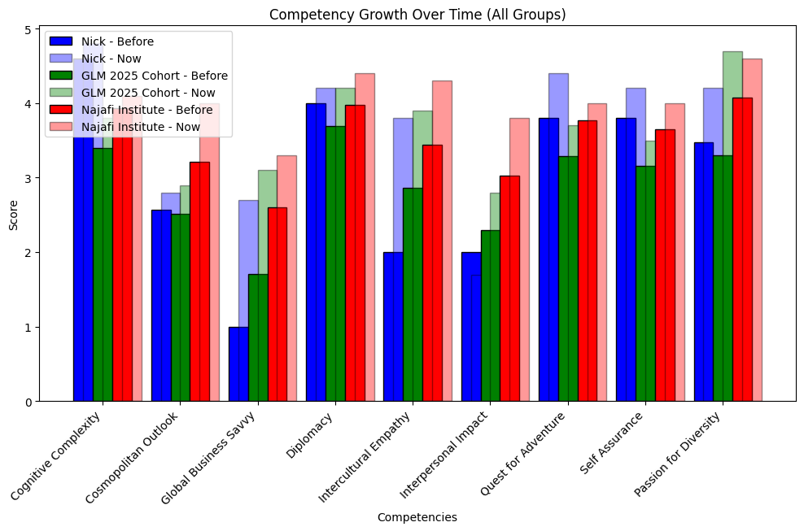
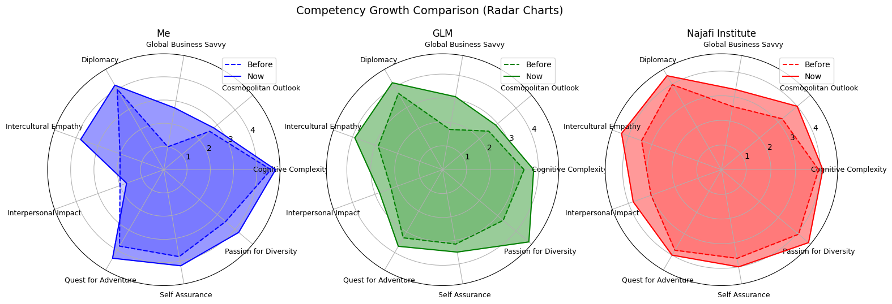
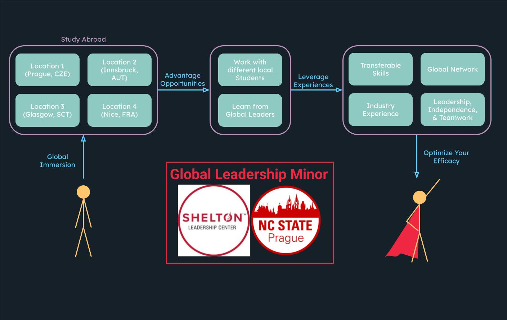

The Global Leadership minor program is a unique opportunity for students to develop their leadership skills and gain a deeper understanding of the complexities of global leadership. The program is designed to equip students with the knowledge, skills, and competencies necessary to succeed in a rapidly changing global environment.Students who complete the Global Leadership minor program will be well-prepared to take on leadership roles in a variety of fields, including business, government, non-profit, and international organizations.
A competency assessment was taken before and after the program. The skills assessed deal with global leadership, below a data analysis of the skill development can be examined. These are the same skills that are described on the previous page.
import numpy as np
import matplotlib.pyplot as plt
# Competency labels
competency_labels = [
"Cognitive Complexity", "Cosmopolitan Outlook", "Global Business Savvy",
"Diplomacy", "Intercultural Empathy", "Interpersonal Impact",
"Quest for Adventure", "Self Assurance", "Passion for Diversity"
]
# Sample data for 3 groups (before, now) pairs
competencies = np.array([
[4.60, 4.80],
[2.57, 2.80],
[1.00, 2.70],
[4.00, 4.20],
[2.00, 3.80],
[2.00, 1.70],
[3.80, 4.40],
[3.80, 4.20],
[3.47, 4.20]
])
group_competencies = np.array([
[3.40, 3.80],
[2.51, 2.90],
[1.71, 3.10],
[3.69, 4.20],
[2.86, 3.90],
[2.29, 2.80],
[3.29, 3.70],
[3.16, 3.50],
[3.30, 4.70]
])
grand_competencies = np.array([
[3.93, 4.1],
[3.21, 4],
[2.60, 3.3],
[3.98, 4.4],
[3.44, 4.3],
[3.03, 3.8],
[3.77, 4],
[3.65, 4],
[4.07, 4.6]
])
groups = [competencies, group_competencies, grand_competencies]
group_labels = ["Nick", "GLM 2025 Cohort", "Najafi Institute"]
colors = ['b', 'g', 'r']
bar_width = 0.25
The provided code was used in Jupyter Notebooks to calculate the following graphics. This code can be reused if I update my GDMI test results or used by others adding their own personal scores.

# Create grouped bar chart
fig, ax = plt.subplots(figsize=(12, 6))
index = np.arange(len(competency_labels))
for i, (group, label, color) in enumerate(zip(groups, group_labels, colors)):
before = group[:, 0]
now = group[:, 1]
ax.bar(index + i * bar_width, before, bar_width, label=f"{label} - Before", color=color, edgecolor="black", alpha=1)
ax.bar(index + i * bar_width + bar_width/2, now, bar_width, label=f"{label} - Now", color=color, edgecolor="black", alpha=0.4)
ax.set_xlabel("Competencies")
ax.set_ylabel("Score")
ax.set_title("Competency Growth Over Time (All Groups)")
ax.set_xticks(index + bar_width)
ax.set_xticklabels(competency_labels, rotation=45, ha="right")
ax.legend()
plt.show()

# Create multiple radar charts
fig, axs = plt.subplots(1, 3, figsize=(18, 6), subplot_kw=dict(polar=True))
# Compute angles for radar chart
angles = np.linspace(0, 2 * np.pi, len(competency_labels), endpoint=False).tolist()
for i, (group, label, ax) in enumerate(zip(groups, group_labels, axs)):
before = np.append(group[:, 0], group[0, 0]) # Close loop
now = np.append(group[:, 1], group[0, 1]) # Close loop
group_angles = angles + [angles[0]] # Properly close the angle loop
ax.plot(group_angles, before, color=colors[i], linestyle='dashed', label="Before")
ax.fill(group_angles, before, color=colors[i], alpha=0.2)
ax.plot(group_angles, now, color=colors[i], linestyle='solid', label="Now")
ax.fill(group_angles, now, color=colors[i], alpha=0.4)
ax.set_xticks(angles)
ax.set_xticklabels(competency_labels, fontsize=9)
ax.set_title(label)
ax.legend()
plt.suptitle("Competency Growth Comparison Radars", fontsize=14)
plt.show()
Below the benefits and usage of the program is detailed in the style of a software architecture diagram. The figure details how a person can interact with the system, and how it equips them for success in any environment.

The Global Leadership Minor allows a person to equip themselves with the skills of a global leader, enabling them for success in any subsequent field. A person first observes total global immersion, through the format of a study abroad program. The GLM program utilizes 4, 2-week courses, each in a new location. Each location and course teaches students new concepts and skills that are essential for a global leader. Students are presented with many opportunites they can take advantage of. They are able to meet with students at each local university to work alongside with, understanding cultural differences and practicing leadership. Students also meet with global leaders in the area and are able to learn from each's individual leadership philosophy. These experiences can be then leveraged into transferable skills, a global network, industry experience, and teamworking abilities to optimize a person's efficacy as an individual.